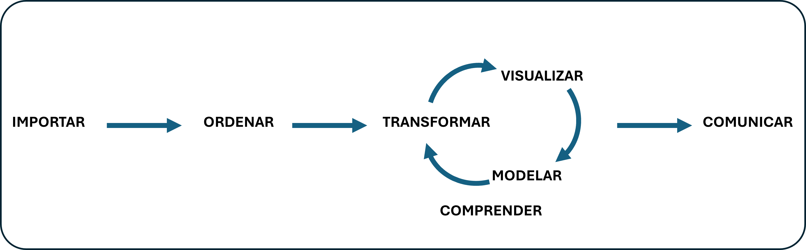
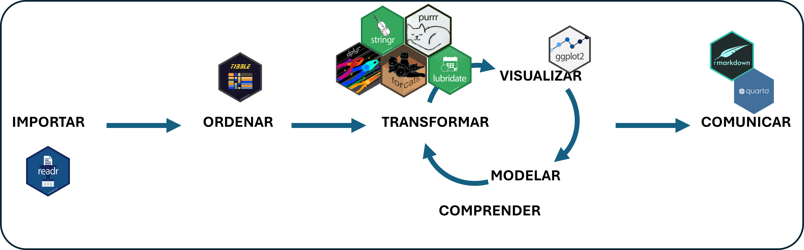

Introducción al Tidyverse: El Universo de Herramientas para transformación de datos
Análisis de Datos 1 - Unidad 3
2025-10-04
El tidyverso: la frontera final
En la clase de hoy, nos sumergirnos en el universo de tidyverse, un conjunto de paquetes de R esencial para el análisis de datos. Cuando esta clase termine no solo vamos a poder importar datos de las distintas fuentes y hacer una exploración general, sino también empezar a manipular y encadenar operaciones entre sí.
¿Qué es Tidyverse? 🤔
El tidyverse no es solo un paquete de R, ¡es una colección de paquetes diseñados para trabajar juntos de forma armoniosa en el análisis de datos! Piensen en él como un “universo” o “ecosistema” de herramientas.
Características Clave del Tidyverse:
- Filosofía “Tidy Data”: Organización de datos de forma consistente y fácil de usar (datos “ordenados”).
- Sintaxis Consistente y Verbosa: Funciones con nombres claros (verbos) que hacen tareas específicas. Código fácil de leer y entender.
- Diseñado para el Flujo de Trabajo de Data Science: Paquetes para cada etapa del análisis: importación, limpieza, transformación, visualización, modelado, comunicación.
- Énfasis en la Legibilidad y la Reproducibilidad: Código más fácil de escribir, leer, mantener y compartir.
- Comunidad Activa y Documentación Exhaustiva: Gran apoyo y recursos para aprender y resolver problemas.
Un flujo de trabajo ordenado o tidy tiene fases que iteran entre sí
Tidyverse propone uno o varios paquetes que conservando una lógica similar responden a cada una de estas etapas
Paquetes principales de Tidyverse: ¡Los 8 Magníficos! ✨
Aunque tidyverse incluye muchos paquetes, hay 8 paquetes “centrales” que son los más esenciales y que se cargan automáticamente al cargar tidyverse con library(tidyverse):
Paquetes principales de Tidyverse: ¡Los 8 Magníficos! ✨
ggplot2: ¡Para visualizaciones de datos impresionantes y personalizables!dplyr: ¡Para manipulación y transformación de datos! (Verbos:filter,select,mutate,arrange,summarize,group_by)tidyr: ¡Para “ordenar” tus datos y organizarlos en formato “tidy”!readr: Para importar datos de forma rápida y eficiente (Funciones:read_csv,read_tsv,read_delim, etc. - Alternativa aread.csvy funciones base de R )purrr: ¡Para programación funcional y trabajar con listas de forma elegante!tibble: ¡Para crear data frames modernos y mejorados! (Alternativa a los data frames base de R, más “amigables” y consistentes)stringr: ¡Para manipulación de cadenas de texto (strings)!forcats: ¡Para trabajar con variables categóricas (factores)!
¡Y muchos más paquetes útiles en el “universo” Tidyverse! (como readxl, lubridate, httr, rvest, etc.)
Instalando y Cargando el Tidyverse 📦
Instalar Tidyverse (solo la primera vez):
Para instalar cualquier librería siempre usamos la función install.packages() por lo que si aún no lo hiciste deberas escribir:
Y cada vez que querramos usar el proyecto deberemos cargarlo al inicio de cada sesión de R: escribiendo library() y el nombre de la librería
Y así cuando cargamos tidyverse , se cargan automáticamente los paquetes que este contiene. ¡Listos para usar!
Cargar los datos
Vamos a trabajar con la serie histórica de Encuesta Nacional de Consumos Culturales que representa las olas 2013,2017 y 2022 de este estudio.
# creamos el vector con la url
encc_serie_hist_url <- "https://datos.cultura.gob.ar/dataset/251c2ac2-e670-451c-9dbf-a4212af225b5/resource/d9570d16-f5d1-4d18-8145-3372eafb97af/download/encc-serie-historica.csv"
# lo asignamos a un objeto tabla con la función read.csv
encc_serie_hist <- read.csv(encc_serie_hist_url)
# vemos los primeros 3 casos
head(encc_serie_hist,3)| ID | EXPANSOR | NSE_3 | EDICION | GRUPOS_EDAD | EDAD | NSE_SOCIOE | GENERO | REGION | PROVINCIA | TV1 | TV2 | TV3_1 | TV3_2 | TV3_3 | TV3_4 | TV3_5 | TV3_6 | TV5_1 | TV5_2 | TV5_3 | TV5_4 | TV6.1 | TV6.2 | TV8.1 | TV8.2 | TV8.3 | TV8.4 | TV8.5 | CINE1 | CINE2 | CINE3 | CINE4 | CINE5 | NOTI1 | NOTI2 | NOTI3.1 | NOTI5 | NOTI8 | NOTI10 | LIBRO1 | LIBRO2 | LIBRO3.1 | LIBRO3.2 | LIBRO4_1 | LIBRO4_2 | LIBRO4_3 | LIBRO4_4 | LIBRO5 | LIBRO6 | LIBRO9 | LIBRO13 | RADIO1 | RADIO2 | RADIO3 | RADIO5_1 | RADIO5_2 | RADIO5_3 | RADIO5_4 | RADIO5_5 | MUSICA1 | MUSICA2 | MUSICA3 | MUSICA7_1 | MUSICA7_2 | MUSICA7_3 | MUSICA7_4 | MUSICA7_5 | MUSICA7_6 | MUSICA7_7 | MUSICA7_8 | MUSICA7_9 | MUSICA9 | MUSICA10 | MUSICA11 | MUSICA12 | MUSICA13 | MUSICA15 | VJ1 | VJ2 | VJ3_1 | VJ3_2 | VJ3_3 | VJ3_4 | VJ3_5 | VJ3_6 | VJ7 | TEATRO1 | TEATRO3 | TEATRO4 | PAT1 | PAT4 | PAT5_1 | PAT5_2 | PAT5_3 | PAT5_4 | PAT5_5 | PAT5_6 | PAT7.1 | PAT7.2 | PAT7.3 | PAT7.4 | PAT7.5 | PAT7.6 | PAT7.7 | PAT7.8 | PAT7.9 | PAT7.10 | PAT7.11 | PAT7.12 | PAT7.14 | PAT7.15 | PAT7.16 | PAT7.19 | INT1 | INT2 | INT3 | INT4 | INT5 | INT6_1 | INT6_2 | INT6_3 | INT6_4 | INT6_5 | INT6_6 | INT6_7 | INT7.1 | INT7.2 | INT7.3 | INT7.4 | INT7.5 | INT7.6 | INT8 | INT9 | INT10 | COMUN4 | SOC2 | SOC13.1 | SOC13.2 |
|---|---|---|---|---|---|---|---|---|---|---|---|---|---|---|---|---|---|---|---|---|---|---|---|---|---|---|---|---|---|---|---|---|---|---|---|---|---|---|---|---|---|---|---|---|---|---|---|---|---|---|---|---|---|---|---|---|---|---|---|---|---|---|---|---|---|---|---|---|---|---|---|---|---|---|---|---|---|---|---|---|---|---|---|---|---|---|---|---|---|---|---|---|---|---|---|---|---|---|---|---|---|---|---|---|---|---|---|---|---|---|---|---|---|---|---|---|---|---|---|---|---|---|---|---|---|---|---|---|---|---|---|---|---|---|---|---|---|---|
| 1 | 10011 | C2+C3 | 2013 | 13 A 17 ANIOS | 16 | C3 | MUJER | CENTRO | CORDOBA | SI | NO | NO | NO | SI | NO | SI | SI | SI | NO | 4 | NA | SI | TODOS O CASI TODAS LOS MESES | NA | NA | NO | NA | SI | NA | NO | LE ABURREN/ SE DUERME | NA | NA | 2 | 10 | SI | SI | NO | SI | SI | SI | NO | NS NC | NO | NO | NO | NO | NO | SI | TODOS O CASI TODAS LAS SEMANAS | NA | NA | NO | NA | NO | NA | NUNCA | NUNCA | NUNCA | HACE MAS DE UN ANIO | ENTRE 1 Y 12 MESES | NUNCA | NUNCA | NUNCA | NUNCA | NUNCA | NUNCA | NUNCA | NUNCA | NUNCA | SI | SI | SI | SI | SI | SI | TODOS O CASI TODOS LOS DIAS | NUNCA | NUNCA | 2 | 0 | 2 | 4 | SECUNDARIOS INCOMPLETOS | SECUNDARIOS COMPLETOS | |||||||||||||||||||||||||||||||||||||||||||||||||||||
| 2 | 12572 | C2+C3 | 2013 | 50 A 64 ANIOS | 53 | C3 | MUJER | CENTRO | CORDOBA | SI | NO | SI | NO | NO | NO | SI | NO | NO | NO | 1 | NA | NO | NS NC | NA | NA | SI | ALGUNAS VECES AL MES | NA | SI | NA | NO | MOTIVOS ECONOMICOS | NA | NA | NA | NA | SI | SI | NO | NO | NO | NO | SI | ALGUNAS VECES A LA SEMANA | NO | NO | NO | NO | NO | SI | NO | NO | NO | MOTIVOS ECONOMICOS | NA | NA | NO | NA | NO | NA | HACE MAS DE UN ANIO | HACE MAS DE UN ANIO | HACE MAS DE UN ANIO | HACE MAS DE UN ANIO | NUNCA | HACE MAS DE UN ANIO | HACE MAS DE UN ANIO | NUNCA | HACE MAS DE UN ANIO | HACE MAS DE UN ANIO | HACE MAS DE UN ANIO | HACE MAS DE UN ANIO | HACE MAS DE UN ANIO | HACE MAS DE UN ANIO | NO | NO | NO | 0 | 0 | 0 | 2 | SECUNDARIOS COMPLETOS | ||||||||||||||||||||||||||||||||||||||||||||||||||||||||
| 3 | 9911 | C2+C3 | 2013 | 30 A 49 ANIOS | 34 | C3 | VARON | CENTRO | CORDOBA | SI | NO | SI | NO | NO | NO | SI | NO | NO | NO | 4 | NA | NO | NS NC | NA | NA | SI | TODOS O CASI TODOS LOS DIAS | NA | NO | NA | NO | NS NC | NA | NA | NA | 20 | NO | NO LE GUSTA/ INTERESA LA RADIO | NO | SI | TODOS O CASI TODOS LOS DIAS | SI | SI | NO | NO | NO | NO | NO | NO | SI | ALGUNAS VECES AL ANIO O MENOS | NA | NA | NO | NA | NO | NA | ENTRE 1 Y 12 MESES | HACE MAS DE UN ANIO | NUNCA | HACE MAS DE UN ANIO | ENTRE 1 Y 12 MESES | ENTRE 1 Y 12 MESES | ENTRE 1 Y 12 MESES | NUNCA | ENTRE 1 Y 12 MESES | ENTRE 1 Y 12 MESES | NUNCA | NUNCA | ENTRE 1 Y 12 MESES | NUNCA | SI | SI | SI | SI | SI | NUNCA | NUNCA | NUNCA | 2 | 0 | 1 | 5 | TERCIARIOS INCOMPLETOS | PRIMARIOS COMPLETOS |
dplyr: el “domador” de datos
El paquete dplyr es uno de los paquetes embebidos dentro del paquete tidyverse: un conjunto de paquetes destinados a la limpieza y manipulación de datos y que se convirtió en un estándar en la práctica de la limpieza y manipulación de datos en R.

Verbos Básicos del Tidyverse: ¡Acciones con Datos! 🎬
Dentro del tidyverse, especialmente en el paquete dplyr vamos a trabajar mucho con:
select(): Selecciona las columnas que necesitas.filter(): Filas las filas u observaciones que cumplen con ciertas condiciones.mutate(): Crear nuevas columnas a partir de las existentes.group_by(): agrupar filas según los valores de una o más columnas.summarize(): Resume o hace un cálculo para los datos que agrupamos.arrange(): Ordenar filas según los valores de una o más columnas.
Como por un tubo: Los Pipes %>%
Todos estos verbos se van a ir encadenando por una especie de tubo o pipes que representamos con %>% (Ctrl+may+M)
¿Qué hacen los pipes %>%?
- Conectan operaciones en secuencia (de izquierda a derecha, de arriba a abajo).
- Toman el resultado de la operación de la izquierda y lo “envían” como primer argumento a la función de la derecha.
- Permiten escribir código de forma más lineal, clara y fácil de leer, especialmente para secuencias largas de transformaciones de datos.
- Evitan crear variables intermedias innecesarias, haciendo el código más conciso y limpio.
Pipe es como decirle “Y después”

Puede ser que en alguna documentación o libro encuentres otro “modelo” de pipe
Esto se debe a que una versión de pipe es nativa y la otra no. Pero a los fines de lo que necesitas saber hasta ahora tienen la misma función.

Arranquemos por llamar a tidyverse 📢
La primera vez que llamamos a tidyverse nos da un mensaje de advertencia, en donde nos pone al tanto de los paquetes que nos está trayendo y algunos conflictos entre funciones.
El que avisa no traiciona
Tidyverse nos informa que pueden existir conflictos entre algunas de sus funciones. Esto se debe a que inicialmente su desarrollo se realizó de manera separada y por lo tanto las funciones tienen el mismo nombre. Para evitar problemas podes usar el nombre del paquete dos puntos y el nombre de la función.
1. Seleccionando columnas con select()
Hasta ahora habíamos visto que podíamos llamar a una columna en particular con el signo $ o con [,columna_seleccionada]
[1] "C3" "C3" "C3" "D2E" "C3" "C3" la función select() me permite hacer esto con muchas columnas. Veamos este ejemplo en el que charlamos usando verbos y el pipe (y después)
encc_serie_hist |> # toma la tabla encc_series_hist y después...
select(ID,EDICION,EDAD,GRUPOS_EDAD) |> # selecciona las columnas que te indico, y después
head() # selecciona los primeros 5 casos| ID | EDICION | EDAD | GRUPOS_EDAD |
|---|---|---|---|
| 1 | 2013 | 16 | 13 A 17 ANIOS |
| 2 | 2013 | 53 | 50 A 64 ANIOS |
| 3 | 2013 | 34 | 30 A 49 ANIOS |
| 4 | 2013 | 32 | 30 A 49 ANIOS |
| 5 | 2013 | 89 | 65 ANIOS Y MAS |
| 6 | 2013 | 22 | 18 A 29 ANIOS |
2. Filtrando filas con filter()
Con filter vamos filtrar las observaciones que cumplan determiada condición.
encc_serie_hist |> # toma la tabla encc_series_hist y después...
select(ID,EDICION,EDAD,GRUPOS_EDAD) |> # selecciona las columnas que te indico, y después
filter(EDICION == 2022) |> # traeme solamente los casos de la edición 2022 y después
tail() # # selecciona los últimos 5 casos| ID | EDICION | EDAD | GRUPOS_EDAD | |
|---|---|---|---|---|
| 3375 | 9749 | 2022 | 45 | 30 A 49 ANIOS |
| 3376 | 9750 | 2022 | 24 | 18 A 29 ANIOS |
| 3377 | 9751 | 2022 | 72 | 65 ANIOS Y MAS |
| 3378 | 9752 | 2022 | 42 | 30 A 49 ANIOS |
| 3379 | 9753 | 2022 | 21 | 18 A 29 ANIOS |
| 3380 | 9754 | 2022 | 24 | 18 A 29 ANIOS |
3. Crear columnas nuevas con mutate()
Supongamos que quisiera saber la edad de todos los entrevistados al dia de hoy
encc_serie_hist |> # toma la tabla encc_series_hist y después...
select(ID,EDICION,EDAD,GRUPOS_EDAD) |> # selecciona las columnas que te indico, y después
filter(EDICION == 2022) |> # traeme solamente los casos de la edición 2022 y después
mutate(edad_2025 = EDAD+3) |> # crea una nueva columna (edad_2025) que es igual a edad+3 y después
sample_n(size = 4) # crea una muestra de 4 casos | ID | EDICION | EDAD | GRUPOS_EDAD | edad_2025 |
|---|---|---|---|---|
| 8673 | 2022 | 67 | 65 ANIOS Y MAS | 70 |
| 8613 | 2022 | 24 | 18 A 29 ANIOS | 27 |
| 7879 | 2022 | 59 | 50 A 64 ANIOS | 62 |
| 8115 | 2022 | 84 | 65 ANIOS Y MAS | 87 |
4.summarise() y group_by()
Al pricipio summarise y group_by pueden resultarnos un poco contra intutivos.
encc_serie_hist |> # toma la tabla encc_series_hist y después...
select(ID,EDICION,EDAD,GRUPOS_EDAD) |> # selecciona las columnas que te indico, y después
filter(EDICION == 2022) |> # traeme solamente los casos de la edición 2022 y después
mutate(edad_2025 = EDAD+3) |> # crea una nueva columna (edad_2025) que es igual a edad+3 y después
group_by(GRUPOS_EDAD) |> #
summarise(edad_promedio = mean(EDAD),
edad_promedio_2025 = mean(edad_2025))| GRUPOS_EDAD | edad_promedio | edad_promedio_2025 |
|---|---|---|
| 13 A 17 ANIOS | 15.23645 | 18.23645 |
| 18 A 29 ANIOS | 23.85043 | 26.85043 |
| 30 A 49 ANIOS | 39.43268 | 42.43268 |
| 50 A 64 ANIOS | 56.73661 | 59.73661 |
| 65 ANIOS Y MAS | 73.02322 | 76.02322 |
¡Ya aprendimos a conjugar con dplyr!
La yapa: across(): Aplicar Funciones a Múltiples Columnas
across() es muy útil cuando trabajamos con transformaciones de tablas
across() permite aplicar la misma función (o funciones) a múltiples columnas de forma concisa dentro de verbos como mutate() y summarize().
Sintaxis de across()
Sintaxis básica de across() dentro de mutate():
tabla_mutada <- tabla %>%
mutate(
across(
.cols = columnas_a_modificar,
.fns = funcion_a_aplicar,
# ... argumentos adicionales para la función ...
.names = "{.col}_{.fn}" # (opcional) patrón para nombrar nuevas columnas
)
)across(): Función para aplicar operaciones a múltiples columnas..cols = columnas_a_modificar: Especifica qué columnas quieres modificar (o usar como input). Podes usarc("columna1", "columna2", "columna3"), selectores de columnas (starts_with("...")),everything(),where(is.numeric), etc..fns = funcion_a_aplicar: Especifica qué función (o lista de funciones) quieres aplicar a las columnas seleccionadas en.cols. Puede ser una sola función (ej:mean) o una lista de funciones (ej:list(mean = mean, median = median))..names = "{.col}_{.fn}": (Opcional) Define un patrón para nombrar las nuevas columnas que se crean (si la función aplicada crea nuevas columnas, comomutate()).{.col}se reemplaza por el nombre de la columna original, y{.fn}por el nombre de la función (si usaste una lista de funciones nombradas).
Ejemplo de across() con mutate()
Supongamos que queremos convertir a minuscula los valores de varias columnas de texto
encc_serie_hist %>%
mutate(
across(
.cols = c("REGION", "PROVINCIA", "GENERO"), # Columnas de texto a modificar
.fns = tolower, # Función: convertir a minuscula (tolower)
.names = "{.col}_MINUS" # Nombres de nuevas columnas: "columna_MAYUS"
)
) %>%
select(REGION, REGION_MINUS, PROVINCIA, PROVINCIA_MINUS, GENERO, GENERO_MINUS) %>%
head()| REGION | REGION_MINUS | PROVINCIA | PROVINCIA_MINUS | GENERO | GENERO_MINUS |
|---|---|---|---|---|---|
| CENTRO | centro | CORDOBA | cordoba | MUJER | mujer |
| CENTRO | centro | CORDOBA | cordoba | MUJER | mujer |
| CENTRO | centro | CORDOBA | cordoba | VARON | varon |
| CENTRO | centro | CORDOBA | cordoba | MUJER | mujer |
| CENTRO | centro | CORDOBA | cordoba | VARON | varon |
| CENTRO | centro | CORDOBA | cordoba | MUJER | mujer |
across() es un ejemplo de la filosofía tidy
Nos evita la repetición de tareas y por ende nos ahorra un montón de tiempo y posibles errores.
across() es muy versátil y se puede usar con muchos verbos de dplyr y con diferentes tipos de funciones. ¡Simplifica mucho el código cuando necesitas aplicar la misma transformación a varias columnas!
Y ahora cómo seguimos?
En esta clase aprendimos a usar los verbos básicos del paquete dplyr junto con el conector de estos verbos el pipe %>%
Hacete un buen 🧉 que en la segunda parte de nuestra clase vamos a ver:
Cómo unir dos tablas de resumen entre sí (porque los datos no vienen siempre todos juntos, ni de una) -
Cómo “dar vuelta” una tabla. (Porque a veces la tortilla necesita vuelta y vuelta)